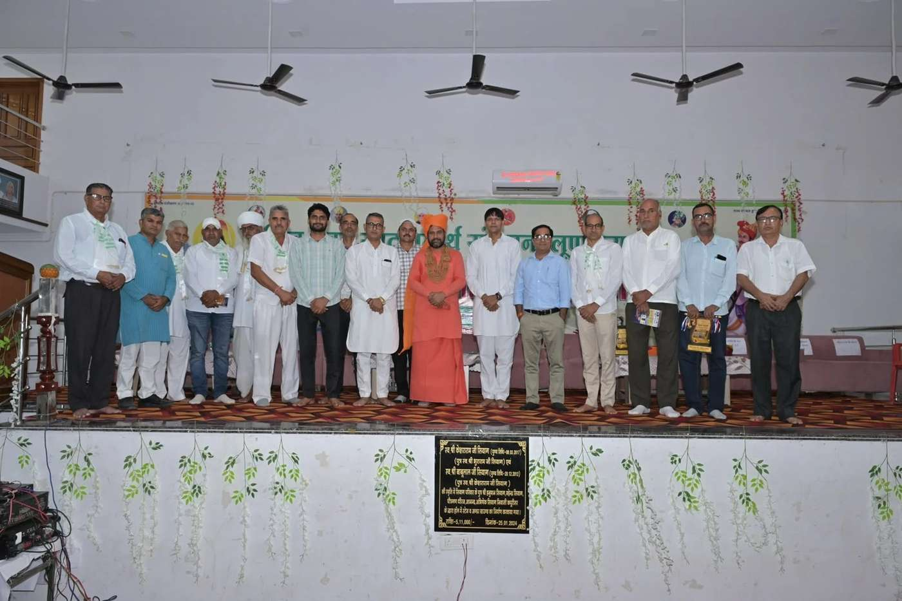
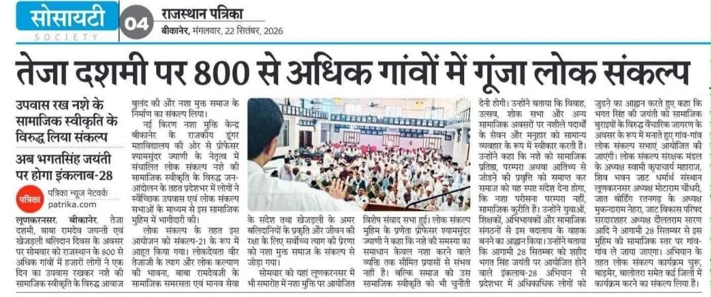

21 सितम्बर 2026 · तेजा दशमी / रामदेव जयंती / खेजड़ली बलिदान दिवस
संकल्प 21
21 सितम्बर 2026 · राजस्थान के 840 गाँवों में एक दिन का उपवास
यह आयोजन पूरा हो चुका है
21 सितम्बर 2026 का उपवास और करुणा 21 का सेवा कर्म संपन्न हुआ। इस पृष्ठ पर उसका विवरण, आँकड़े और मीडिया कवरेज है।
21 सितम्बर 2026 · तेजा दशमी / रामदेव जयंती / खेजड़ली बलिदान दिवस
840 गाँवों में एक दिन का उपवास
तेजा दशमी, रामदेव जयंती एवं खेजड़ली बलिदान दिवस के अवसर पर राजस्थान के 840 गाँवों में लोगों ने एक दिन का उपवास रखकर लोकसंकल्प मुहिम के साथ अपनी प्रतिबद्धता व्यक्त की।
संकल्प 21 नाम से आयोजित इस एक दिवसीय उपवास का उद्देश्य लोकदेवताओं के आदर्शों को याद करते हुए नशा मुक्त समाज के आह्वान को जन-जन तक पहुँचाना था।
इस अभियान से जुड़ने वाले प्रत्येक व्यक्ति के प्रति लोकसंकल्प टीम आभार व्यक्त करती है।

सजीव आँकड़े
वेबसाइट से पंजीकरण
ये वेबसाइट पर आए पंजीकरण हैं। ऊपर लिखा 840 गाँवों का आँकड़ा अभियान के अपने रिकॉर्ड से है, जिसमें वे गाँव भी हैं जहाँ सभा के माध्यम से सामूहिक उपवास हुआ।
उपवास के साथ सेवा का एक कर्म
करुणा 21
उपवास के साथ एक सेवा कर्म : गाय को गुड़, रोटी या चारा खिलाना, अथवा पौधा लगाना या पेड़ को पानी देना। जिन्होंने यह किया, उन्होंने उसकी फोटो भेजकर अपना योगदान इस मुहिम में दर्ज कराया।
यह छोटा सा कर्म केवल एक फोटो के लिए नहीं था, बल्कि उस भावना का प्रतीक है :
जो निर्बल के प्रति करुणा रखता है, वही समाज के प्रति उत्तरदायित्व भी समझता है।
एक उपवास · एक संकल्प · एक सेवा
सजीव आँकड़े
करुणा 21 के आँकड़े
जिन्होंने अपने सेवा कर्म की फोटो भेजी।
प्रेरणा
लोकदेवताओं की प्रेरणा से लोकसंकल्प
राजस्थान की लोकचेतना में वीर तेजाजी त्याग, वचन, साहस और गौ-रक्षा के अनुपम प्रतीक हैं। लोकमान्यता में उन्होंने गायों की रक्षा के लिए अपने प्राणों तक की परवाह नहीं की और अपना दिया हुआ वचन अंतिम क्षण तक निभाया।
तेजाजी का जीवन हमें यह संदेश देता है कि सच्चा संकल्प वही है जिसके लिए व्यक्ति अपने निजी हित और सुविधा से ऊपर उठ सके।
आज हमारे सामने चुनौती अलग है। आज हमारे बच्चों, युवाओं और परिवारों को नशे से बचाने के लिए किसी शस्त्र की नहीं, बल्कि संकल्प, संयम और सामाजिक साहस की आवश्यकता है।
जिस प्रकार तेजाजी ने गौ-रक्षा के लिए अपना वचन निभाया, उसी भावना से इस तेजा दशमी पर हम भी एक वचन लें :
हम नशे को सामाजिक स्वीकृति नहीं देंगे।
न अपने घर में, न अपने उत्सव में, न अपनी परंपराओं के नाम पर, और न किसी सामाजिक मनुहार के रूप में।
इसी पावन दिन लोकदेवता बाबा रामदेवजी की जयंती भी हमें सेवा, सामाजिक समरसता और मनुष्य-मनुष्य के बीच भेदभाव से ऊपर उठकर लोककल्याण की प्रेरणा देती है।
यही दिन खेजड़ली बलिदान दिवस के रूप में भी स्मरण किया जाता है, जब खेजड़ी के वृक्षों की रक्षा के लिए दिए गए बलिदान ने यह सिखाया कि जीवन की रक्षा के लिए खड़ा होना ही सबसे बड़ा धर्म है।
इसलिए संकल्प 21 केवल व्यक्तिगत उपवास नहीं है। यह तेजाजी के साहस और त्याग तथा बाबा रामदेवजी की सेवा और सामाजिक समरसता से प्रेरित एक लोकसंकल्प है :
नशे की सामाजिक स्वीकृति के विरुद्ध, स्वस्थ परिवार और संवेदनशील समाज के पक्ष में।
- तेजाजी के त्याग की स्मृति में संकल्प।
- बाबा रामदेवजी की लोकमंगल भावना से सेवा।
- और नशामुक्त समाज के लिए एक दिन का उपवास।
मीडिया कवरेज
अख़बारों में लोकसंकल्प

अगला कदम
28 सितम्बर : इंकलाब 28
भगत सिंह जयंती पर सपरिवार उपवास और लोकसंकल्प सभा। अभी पंजीकरण खुला है।